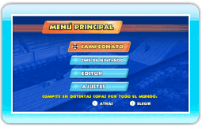

9 |
Cómo comenzar una partida |
 |
|
Cuando juegues por primera vez, deberás crear los datos de un piloto en un archivo vacío e introducir el nombre del piloto. Si ya existen archivos con datos, selecciona al piloto que quieras utilizar para jugar.
Nota: Para acceder al menú de opciones del piloto, sitúate sobre el archivo de un piloto y pulsa
 . En este menú podrás cambiar el nombre del piloto o borrar sus datos. . En este menú podrás cambiar el nombre del piloto o borrar sus datos.Una vez borrados, los datos del piloto no se podrán recuperar, así que ten cuidado.
Una vez que hayas seleccionado un piloto, accederás al menú principal.
|
 |
 |
 |